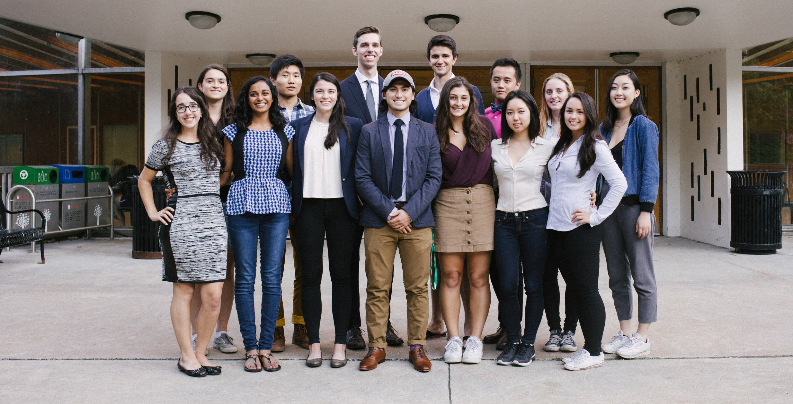

About PULS
The Physiology Undergraduate League of Students is the student government of the Department of Physiology at McGill University

By the time you graduate with your physiology degree, you will have concrete and integrated knowledge about the way the human body works to keep us alive and well day in and day out. A degree in physiology is a phenomenal stepping stone to other health related fields as it encompasses the studies of biology, chemistry, biochemistry and even some physics (don’t worry, not that much!), allowing you to understand (as opposed to regurgitating facts) the dynamic processes of human physiology. That being said, the physiology undergraduate league of students (PULS) is there to help you along the way and make sure that your three years in physiology are truly a blast.
In the academics department, PULS organizes course packs, NTCs, and a student-lead mentoring program called “Synapse” which pairs every U1 student with a U3 student, giving you the info that only an experienced physio veteran could provide! To top that off, PULS also holds a host of social events because we understand that the secret to a successful undergrad is a balance between studies and a social life. PULS organizes BBQs, camping trips, a semi formal, wine and cheese, Mt. Ste-Anne ski trip and much much more!
PULS is located in McMed at 1017 and our office hours are from 10:30-2:30 Monday to Friday. Everyone is always welcome to come by for info or just to hang out in between classes. We hope to meet you soon!
Our members
Becka Gibson
Co-President
Program: Major Physiology and Minor Computer Science
Sub-field of interest: Gains PHGY (cardio & resp)
Favourite cell: GI dendritic cell (the one that snags pathogens with an arm stuck through the epithelium)
Favourite study spot: Trottier 3rd Floor
Hey PHGY pham! It's Becka here, composing one-half of your super peppy Co-Presidential pair on PULS for this academic year. I'm a U3 student from Oakville, Ontario, self-identifying as a shameless night owl, master procrastinator, and lover of both caffeine and afternoon class scheduling. When not on that daily PHGY grind, I love reading, running, and exploring the city with my gem of a roomie. I truly can't wait to have a fantastic year with all of you - see you at PHGY Fridays!
Elizabetta Maratta
Co-President
Program: Honours Physiology
Sub-field of interest: Molecular biology and cardio-respiratory system
Favourite Cell: Pacemaker cells
Favourite Organ: Brain
Hey fellow PHGY peeps! My name is Elizabetta and I am one of the Co-presidents of PULS along with the lovely Becka! I am born and raised in Montreal and yes I love the habs! I love trying new things and meeting new people! I play many sports and enjoy travelling very much! I look forward to meeting many of you, always feel free to stop by the office even if it’s just to say hi!
Christina Kim
VP Academics
Program: Honours Physiology
Sub-field of interest: Neuroendocrinology
Favourite System: Nervous system
Favourite Organ: Hypothalamus
Hi PHGY! I’m Christina, your VP Academic. I am a U3 student in my final year of study at McGill. For my honours project, I’m studying the role of NG2-glia in leptin signalling. My lab is on E2 at the Glen, so if anyone is there, come say hi! This year, I’ll be organizing and hosting PHGY 311 tutorials (my favourite course at McGill), as well as editing and producing the Journal of Undergraduate McGill Physiology Students (JUMPS). Come hang out in the office and feel free to ask me any questions! Cheers!
Jamie Kim
VP Social
Program: Honours Physiology
Sub-field of interest: Cell and molecular physiology
Favourite system: Reproductive system
Favourite building on campus: Redpath - Cybertheque (my second home)
Hey Physiology! I’m Jamie, the VP Social. Currently, I am in my final year here at McGill and doing my honours project in a hematopoietic stem cell lab. On the side, I like to eat and sleep. I’m excited to be part of PULS this year. I’ll be planning events such as our NUMxPULS apartment crawl and Wine and Cheese. Feel free to msg me if you have any ideas for events. Hope to see you around!
Saijel Patel
VP Finance
Program: Honours Physiology
Sub-field of interest: Immunology
Favourite cell: Naïve T-cell
Favourite building on campus: Second Cup in Stewart Bio (coffee is bae)
HEY PHGYS! I’m Saijel, your VP Finance this year! I am a huge advocate of having random dance parties, photobombing strangers’ (or friends’, really just anybody’s) photos and signing up for 17 credits worth of classes, then dropping one right before Add-Drop. I am from the USA/Switzerland/India and my life goal is to eat my weight in chocolate. Fun fact: my spirit animal is a red panda. Come hang out with me in the office or at PHGY Friday (beer on PULS - I can make that happen)!
T.J. Hui
VP Athletics and Publicity
Program: Major Physiology
Sub-field of interest: Psychology and Music
Favourite organ: Brain
Favourite protein complex: Telomerase complex
What’s up peoples?! My name’s TJ and I’ll be dealing with the PHGY clothing and organizing the athletic events for this year! I am one of the few council members this year who were born and raised in Montreal. I grew up and went to elementary school in the east end, attended high school in the west island, and CEGEP downtown; I therefore pride myself on my navigation skills, along with a repertoire of songs I know the lyrics to. Naturally, I grew up on the ice rink, learning how to skate before I could run. However, my sports resume also includes soccer, karate, golf, speed skating, lacrosse, skiing, and ball hockey. I’m a huge foodie; I love trying new foods, as long as I’m not allergic to them. If you pass by the PULS office, I’ll be the short guy with long hair, wearing either a cap or a beanie, singing along to my iTunes library.
Taylor McWhirter
U3 Representative
Program: Major Physiology
Sub-field of interest: Toss up between psychology and baking
Favourite organ: Brains on brains
Favourite building on campus: McIntyre Medical Building (obviously, because that is where the PULS office is ♥)
Hey everybody!!! I'm Taylor and I'll be one of the U3 reps this year! My job (along with my partner in crime Aleks) is to make sure all U3s are up to date with all things graduation, and to more importantly organize and plan events to end our time at McGill Physiology with a bang! I'm from a small town in the Gaspesie (the tip of the pinky sticking out of Quebec) and went to John Abbott College. Some of the things I love are: brunch, mimosas, bonfires, not missing the bus and last but not least, PHYSIOLOGY! Hope to meet you all at PHGY Fridays and all other events!
Aleksandar Borisov
U3 Representative
Program: Major Physiology
Sub-field of interest: Cardiology
Favourite physiological mechanism: Na/K pump
Favourite organ: Epididymis
Hey! I'm Aleks and I am one of your U3 reps this year! I am a master of dedicating too much time to extracurriculars and then regretting it later, so I'm hoping this is not one of those situations. I'm originally from Bulgaria, however I spent most of my childhood in Vancouver, and one of my hobbies is dabbling in the sport of beach volleyball. I am currently doing an honours project with the one and only Dr. Shrier, along with taking some badass 4th year courses which you should definitely ask me about! If you ever stop by the PULS office, I'm the tall guy decked out in lululemon and 10tree apparel!
Marissa Aycan
U2 Representative
Program: Physiology and Mathematics
Sub-field of interest: Biostatistics
Favourite protein: Sonic Hedgehog
Favourite building on campus: The 5th floor of Schulich library
Hi friends!!! I’m Marissa and I’m one of your U2 representatives! If you’re ever looking for me in the PULS office, I’m the one wearing a hat (probably backwards) and dancing whether or not there is music playing. I’m from Toronto and I love camp and canoe trips, playing sports, watching hockey (go Leafs go), and eating ice cream. I’m part of a small but mighty squad of physiology students who also happen to love math. I can’t wait to meet and hang out with all of you at PHGY Fridays and enjoy the free beer, courtesy of PULS.
Lunan Zhao
U2 Representative
Program: Liberal Physiology
Sub-field of interest: Neurons and world literature
Favourite Activity: Gazing at stars
Favourite Library: Somewhere Quiet
Hi Physiology! I'm Lunan, U2 Rep. Born in Beijing. Home is the dirt trail to the next adventure. I enjoy listening to rain drip down forests while studying. I play quidditch and a few intermurals at McGill. I love learning about neurons and how our body systems work. It's knowledge you may apply anytime, anywhere. I'm also a pragmatic optimist and love quaint existential quotes. Hit me up anytime to chat about PHGY, pugs, or life ❤
Alborz Kia
U1 Representative
Program: Major Physiology
Sub-field of interest: Nanotechnology and bioengineering
Favourite system: Gastrointestinal tract
Favourite building on campus: anywhere with a table and chair
Hey PHGY! My name is Alborz, and I’m the newest member on council as U1 rep 2016-17! I’m very excited to see what the year ahead unfolds, and to get to know my fellow PHGY family better. You’ll usually find me anywhere on campus that has a quiet spot for studying or reading, or on my several treks to and from McMed. When I’m not busy, I love to play tennis, and go on food runs around Montreal! If you’re struggling with anything in PHGY, or just need to blow off some steam, come to the office or poke me on campus and I’ll be more than happy to chill with y’all for a few!
Zoe Verzani
U1 Representative
Program: Major Physiology
Sub-field of interest: Mathematical modeling
Favourite building on campus: Nahum Gelber Law Library
Favourite organ: Heart
Hello, my name is Zoe and I am the U1 Rep this year. You may see me around campus lounging on the grass outside Redpath, or in C4 desperately trying to finish up my meal plan before it goes away. When I’m not on campus, I’m usually on a hike or out rock climbing with friends. I can’t wait to meet you all at PHGY Friday, and hope to see you at all the awesome events coming up. It’s important to check the PHGY Facebook page weekly to meet other students, like yourself, who have chosen to be a part of the best major at McGill :)
Ryan Buyting
Charity Director
Program: Major Physiology
Sub-field of interest: Biotechnology
Favourite System: Cardiovascular
Favourite Cell: Natural Killer Cytotoxic Lymphocyte
Greetings! My name is Ryan, your PULS Charity Director this year. I am a U3 student in my final year of study at McGill. I am fascinated by all things physiology, with an emphasis on cardiology. I am very excited to be in charge of organizing volunteer events for the physiology student body, as well as hosting fundraisers throughout the year that will be aimed at collecting funds for donation to various charities. Be sure to keep an eye out on the Listserv for more information regarding how you can get involved!
Jiachen Liang
Computer Director
Program: Major Physiology
Sub-field of interest: Cell and molecular physiology
Favourite Protein: Fructose-1,6-bisphosphatase I
Favourite physiological mechanism: The electron transport chain
Hello fellow PHGY students, I'm Jiachen, the computer director. I'm in U3, finishing up my studies here in the hopes of doing graduate studies in molecular physiology and cancer research. I'm a huge nerd and proud to be, so if you want to talk science (especially cancer) with me, you're always welcome. I also take care of this website, so if you find it really ugly, talk to me and I'll try my best to make it pretty. I'll see you around!
HanChen Wang
IHI Representative
Program: Interdepartmental Honours Immunology
Sub-field of interest: Bioinformatics
Favourite cells: Dendritic cells
Favourite study spot: Home or Burnside Basement
Hey PHGY and IHI Students! It's HanChen! I'm a U3 student from China and Vancouver, BC. I'm a late-night sleeper and sometimes sleep through my 10 pre-set alarms. I love playing basketball, playing saxophone, helping others to succeed, and eating good food. I usually hang out at home writing my scripts for my bioinformatics project. Other than that, I hang out at the PULS office and with my friends. If you want to talk to me about life or IHI, find me on FB or track me down at McMed 1017